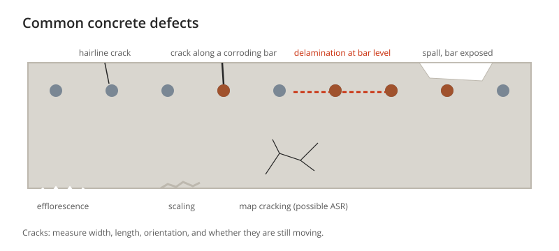

Concrete defects and what they mean
In one sentence: most concrete deterioration is water plus something else (salt, carbonation, freezing, reactive aggregate), and the visible defect is usually the last stage of a process that started inside.

Cracks
Describe each crack by width (with a crack gauge or comparator card), length, orientation, pattern and whether it is active (still moving) or dormant.
- Plastic shrinkage and drying shrinkage: fine, often random or map-like, early in life.
- Flexural: perpendicular to the span in the tension zone, widest at the face in tension.
- Shear: diagonal, near supports, a structural concern when wide.
- Along the reinforcement: often a sign of corrosion pushing the cover off.
- Map cracking with gel or staining: may point to alkali-silica reaction (ASR).
Spalls and delamination
- Delamination: a plane of separation near the surface, usually at the level of the bar, caused by corrosion. It sounds hollow when tapped. See Sounding, chain drag and impact-echo.
- Spall: the delaminated piece has fallen off, often exposing corroded reinforcement.
Corrosion of reinforcement
Rust staining, cracks along bars and spalls. It starts when chlorides (deicing salt, sea spray) or carbonation reach the steel and break its natural protection. See Half-cell potential and corrosion testing.
Surface defects
- Efflorescence: white deposits where water passes through cracks or joints.
- Scaling: loss of the surface paste and fine aggregate, often from freeze-thaw with salt.
- Honeycombing: voids from poor consolidation during construction.
- Abrasion and erosion: wear from traffic or water.
Recording
Note location, size, quantity (length of cracks, area of spalls and delamination as a share of the element), and photograph with a scale. Element-level inspection turns these into condition states. See Condition ratings: NBI 0 to 9 and element condition states.
Common mistakes
- Measuring crack width by eye instead of with a gauge.
- Reporting a spall without checking the delaminated area around it.
- Patching over a corrosion problem without removing the chloride-contaminated concrete.